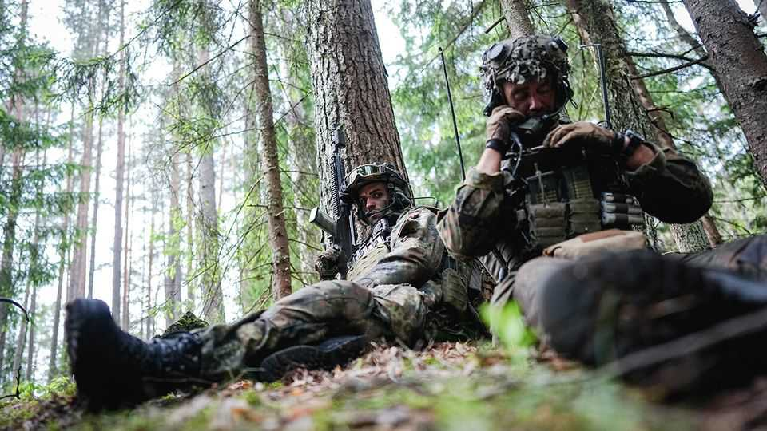
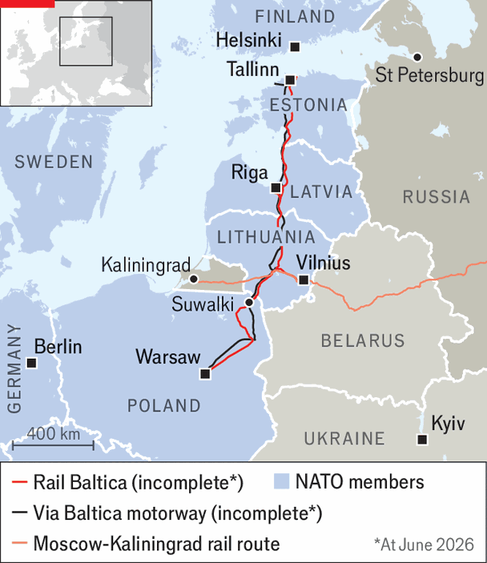

NATO ponders how to defend Eastern Europe as America pulls back
German tanks are returning to a region they once razed
July 2nd 2026

THE strange creatures rumble out of the forest, their bodies clothed in moss, torn fabric and plastic grass; their heads veiled in black netting. The Leopard tanks and Puma infantry fighting vehicles of Germany’s 45th Panzer Brigade are in fancy dress to hide them from hostile drones. For a month the unit trained along Lithuania’s border with Belarus, a Russian satellite state, as part of a recently completed exercise called “Freedom Shield”. The goal: to be ready to “fight tonight” to defend Vilnius, Lithuania’s capital, and hold the Suwalki corridor, which links the Baltic states to Poland.
To that end, the 45th Brigade is not going home. For the first time since the end of the cold war, Germany is permanently deploying military units abroad. These troops are the tip of the spear of an army that is expanding to become Europe’s largest. They will get the latest armour, artillery, drones and anti-aircraft systems as their unit grows from 1,600 soldiers to around 5,000 by the end of 2027.
American forces in the region, meanwhile, are dwindling. An American tank unit—the 1st Battalion, 12th Cavalry Regiment—trained for months in the same area. But it shipped out in June, along with the rest of its brigade in Poland. Nobody knows when or if another American unit will replace it.
Although Germany is struggling to sign up enough volunteers—some soldiers may have to be ordered to join the brigade—Lithuanians shower German troops with gratitude, says Lieutenant Colonel Sebastian Hagen, commander of the multinational battlegroup at the heart of the brigade. “What we are doing now is what all the allies did for Germany throughout the cold war,” he says. “The eastern flank has moved further to the east, and now it’s on Germany to give back a little bit.”
The mission is all the more striking given that German armies—Teutonic, Prussian, imperial and Nazi—have more typically been invaders in the region. In the second world war, they conquered Poland, the Baltic states (Lithuania, Latvia and Estonia) and much of western Russia. After the Nazis surrendered in 1945, the Soviet Union seized the Baltic republics, which regained independence only as it collapsed in 1991. The Soviets also occupied the German city of Königsberg, now the Russian exclave of Kaliningrad. “We are very well aware of what Nazi Germany did here in Lithuania. We are also aware of what the Soviet occupation did to Lithuania,” adds Lieutenant Colonel Hagen. When it is not training, the brigade helps preserve war graves and Jewish cemeteries.
The purpose of NATO, declared Lord Ismay, its first secretary-general, is “to keep the Russians out, the Americans in, and the Germans down”. But as President Donald Trump prepares to meet fellow NATO leaders in Ankara on July 7th-8th, Germany is rising up to keep the Russians out and, it hopes, the Americans in. Under a plan called “NATO 3.0” America demands that Europeans take the lead for their own conventional defence, while America provides a nuclear umbrella.
This fits with Germany’s own determination, since Russia’s invasion of Ukraine in 2022, to transform itself from a defence laggard into a linchpin of European security. It plans to reach NATO’s target of spending 3.5% of GDP on defence by 2029, well before the 2035 deadline. By the end of the decade, Germany could be spending more on its armed forces than nuclear-armed Britain and France combined.
Money alone will not bring self-reliance, however. Collectively, NATO’s European members already spend more on defence than any country bar America. Yet they remain “strategically dependent on the United States across the entire military chain of operations”, declares a report by the Kiel Institute, a think-tank in Germany.
How urgently Europe needs to change depends on two big questions that hang over the summit. First, how threatening is Vladimir Putin? Russia has reorganised its front with NATO with new units, bases and headquarters awaiting future fighting forces. NATO reckons that Russia could menace its members within a few years of an end to or reduction in fighting in Ukraine. Germany wants to be ready by 2029. Poland says the danger may be closer.
The other question is what “America First” portends for Europe. Imagine four incarnations of Mr Trump, all plausible. One is the tough-love adult, pushing Europe to bulk up while protecting it in extremis, in keeping with NATO’s Article 5 on collective defence. Another is the absent friend, unwilling to fight for Europe but still providing some kind of indirect support. A third is the toxic ex-partner, who forsakes Europe but won’t leave the shared NATO home, making life hell for Europeans trying to marshall themselves. Last is the predator who menaces places like Greenland on Europe’s western flank while Russia threatens the eastern one.

Military types, from NATO’s supreme headquarters in Mons, through subordinate commands to frontline units, currently see mainly the tough-love avatar. European and American soldiers plan and train as they have for decades. They hope America will co-ordinate its drawdown with Europe’s build-up, leaving no vacuum.
But Mr Trump is touchy and capricious. In May the Pentagon abruptly announced it would pull 5,000 troops from Germany, as Mr Trump took umbrage at criticism of the war in Iran by Friedrich Merz, the German chancellor. Perversely, the Pentagon has also gone back and forth about replacing the brigade that recently departed from Poland and Lithuania—two of the most pro-American European states. Pete Hegseth, America’s secretary of war, berated “shameful” European allies that kept out of America’s war in Iran and, in some cases, denied its forces use of European bases and airspace. He announced a six-month review of American forces in Europe, which have thus far shrunk from about 100,000 troops to about 80,000.
As well as cutting frontline units, the Pentagon has reduced the rapid-reaction forces it promises to send NATO in case of a war, saying they are needed for actual or potential crises in the Middle East and the Pacific. These include bombers, fighters jets, air-refuelling tankers and warships such as an aircraft-carrier and an attack submarine. That calls into question the “NATO Force Model”, which sets out what forces commanders can count on.
Some in the Trump administration hint that they will not fight for the Baltic states and, worse, they raise concerns about the risk of escalation if NATO deploys missiles that can strike deep into Russian territory. It has cancelled the planned deployment to Germany of a unit eqipped with Tomahawk cruise missiles, with a range of up to 2,500km. It is also holding up Germany’s own order for Tomahawks and briefly blocked allies from using the most advanced AI models. As for the toxic version of Mr Trump, his administration is still destabilising politics in Europe by fomenting hard-right narratives there.
The more anti-European America becomes, the more Russia will fancy a tilt at NATO and the harder it will be for Europeans to fight back. Russia need not mount a frontal assault. Many worry that a limited, ambiguous action might fatally expose NATO’s divisions.

To understand the complexities, drive from Lithuania to the Polish city of Suwalki, through the neck of territory between Belarus and Kaliningrad (see map). Its cemeteries for seven faiths attest to the changing borders and passing armies. Some 65km at its narrowest, the corridor carries two big arteries connecting the Baltic states to the European hinterland—the Via Baltica motorway and Rail Baltica high-speed train line. Both projects are incomplete, partly because of intra-Baltic disagreements. Yet they are vital for peacetime commerce and wartime logistics alike. Even now, under previous agreements, special Russian trains cut across southern Lithuania, ferrying passengers between Kaliningrad and the Russian heartland four times a day in sealed carriages watched by Lithuanian border guards. Goods transit is also restricted.
The Baltic republics have long felt vulnerable, given their small populations, Russian-speaking minorities and the Kremlin’s revanchism. They face frequent “grey-zone” harassment by Russia—cyberattacks, incursions by jets and drones, sabotage of undersea cables, disinformation and more. Vilnius lies just 35km from Belarus, whose criminal gangs send migrants and balloons laden with contraband cigarettes over the border. Were Russia to invade the Baltic states, it might try to sever the Suwalki corridor to stop NATO reinforcements, perhaps with drones alone.
How might such a war unfold, with and without American help? NATO used to assume it would have to fall back, muster reinforcements and then try to retake the Suwalki corridor. These days, though, it intends to hold as much ground as possible.
Ukraine shows that smaller armies can stop Russia, even push it back, with the right mix of grit, technology and help. NATO has strengthened its eastern flank, increasing its four rotational battlegroups (beefed-up battalions) to nine. Some, such as the German one in Lithuania, have expanded into brigades (typically three battalions). The Baltic states and Poland have added muscle, too. Defence spending in all of them is set to reach 5% or more of GDP this year. Lithuania is consolidating its disparate units into a heavy armoured division (with three brigades) totalling some 20,000 men, to be equipped with German Leopard tanks, Swedish CV90 infantry fighting vehicles, French Caesar artillery and American HIMARS missiles.
Much of Lithuania’s terrain—swampy and forested—favours the defender, all the more in the drone era. Were the Suwalki corridor nevertheless cut, the Baltic states would be easier to resupply by sea since Sweden and Finland have joined NATO. American instructors have also been training the Lithuanian Rifleman’s Union, a voluntary militia, in such things as raids and kidnapping under occupation. If Russia attacked, says Rear Admiral Giedrius Premeneckas, one of Lithuania’s top brass, it “would be making a huge mistake—much bigger than they did in attacking Ukraine”.
NATO admits it still has much to learn from Ukraine’s drone-infested battlefield. In exercises this year Ukrainian drone teams wiped out entire NATO battalions. In “Freedom Shield”, the multinational battlegroup used drones and other weapons to repel a German unit playing Russian invaders. Even so, the tank is far from obsolete, insists Lieutenant Colonel Hagen. Future warfare will require better protection against drones, and will involve more unmanned ground vehicles, but, “You still need tanks to take and hold ground.”
With America in the fight, NATO commanders reckon that “multi-domain” operations on land, sea, air, space and cyberspace—all enabled by data networks linking sensors to shooters, processed by AI—will allow them to manoeuvre, outrun drone units and overpower Russian forces. NATO aircraft and long-range missiles would neutralise Russian anti-aircraft and anti-shipping batteries. The most vulnerable spot in the battlefield might not be the Suwalki corridor but Kaliningrad which, Admiral Premeneckas warns, “will not be excluded from military actions if Russia does something stupid”.
How would Europe fight if America cut off all support? The 45th brigade insists it has all the material it needs, in both Lithuania and Germany. Ruben Stewart of the International Institute for Strategic Studies, a think-tank in London, notes in a recent paper that European armies match or exceed Russian capabilities in many domains. But America still provides NATO’s “operating system”, including intelligence, surveillance drones and satellites, long-range weapons, air defences and airlift.
Without America, “what would disappear most critically is not mass, but integration,” Mr Stewart argues. European armies would have to fight “more cautiously, more deliberately”. They would have less warning of Russian troop movements and would be less certain of their direction, so would have to be spread more thinly. They would be less joined-up as satellite signals, communications and data flows became less reliable. Air and ground forces would fight largely separate battles. Russian air defences might survive and Europeans might lack the means to shoot down Russian drones and missiles. All this makes it harder to hit faraway targets and exposes NATO’s rear to more damage.
Europe could not fight a war of manoeuvre. “It would be a war of denial, attrition and endurance that trades speed for sustainability and seeks to win over time rather than at the outset,” writes Mr Stewart. Or, as a senior NATO officer puts it, “It would look more like Ukraine than the battlefield we would hope for.” A static, bloody and drawn-out war of attrition, in turn, might be hard to sustain politically.
“Deep strike” weapons, with a range of 1,000km or more, illustrate Europe’s bind. German-made Taurus and the Franco-British SCALP/Storm Shadow missiles fly about 500km. With America holding back Tomahawks, Europeans are scrambling for alternatives. Germany is working with Britain on hypersonic and stealthy cruise missiles, and with Ukraine on simpler but battle-tested weapons. Others, including the MBDA consortium, are pursing similar systems. To use them effectively, though, Europeans need space-based surveillance and communications networks. Germany plans to spend €35bn on such kit.
Any war would also rage in the shadow of nuclear weapons. Russia has threatened to use them in Ukraine. The idea that even a tough-love America can preserve nuclear deterrence while reducing conventional commitments is debatable. “If the Americans signal that they don’t want to send their conventional troops to fight for Latvia or Poland, then how believable is it that they will be willing to risk nuclear war?” asks Artur Kacprzyk of the Polish Institute of International Affairs, a think-tank.
Britain and France, with arsenals of 200-odd warheads apiece, compared with the 5,000-plus that America and Russia each hold, have declared: “There is no extreme threat to Europe that would not prompt a response by our two nations.” But without America’s nuclear umbrella, European countries will inevitably be more cautious about war with Russia.
What is more, without American leadership a European-only NATO risks “inertia on the political level”, says Christian Mölling of EDINA, a think-tank in Berlin. A war-game last year sponsored in part by Die Welt, a German newspaper, imagined Russia using a humanitarian crisis in Kaliningrad as a pretext to seize the Suwalki corridor. America declines to invoke Article 5; the German brigade fails to act, in part because Russian drones mine the roads leading out of its base. The game was flawed—it ignored Lithuania’s own forces, which would not hesitate to resist—but it highlighted likely pitfalls.
European countries know they have to curb dependence on America, but are torn on priorities. Should they buy weapons off the shelf, including American ones, or take time to develop European ones? For some French officials, the first task is to create European communications systems, data clouds and AI models. Germany, in contrast, wants to bulk up conventional units, not least with tanks and ammunition. Many allies are wary of giving up on America, lest their fears become self-fulfilling.
A paper by the European Council on Foreign Relations, another think-tank, argues that full European autonomy is out of reach. It suggests that NATO’s command should become “double-hatted”, to allow for European-only operations—although this would require American consent.
How long does Europe have? The irascible Mr Trump might turn his back on it at any time. Mr Putin might gamble on challenging Europeans before they are ready. A further imponderable is whether Europeans can hold together if hard-right populists come to power in Britain, France or Germany. In any event, defending Europe begins with helping Ukraine. The more it can resist Russia, the better terms it can strike in a peace deal and the more time Europeans have to prepare. It should not be an impossible quest. As Radek Sikorski, Poland’s foreign minister, puts it, Europe does not need to be “heroic” or to match American prowess: “We don’t even have to be as good as the United States. We just have to be better than Putin.” ■